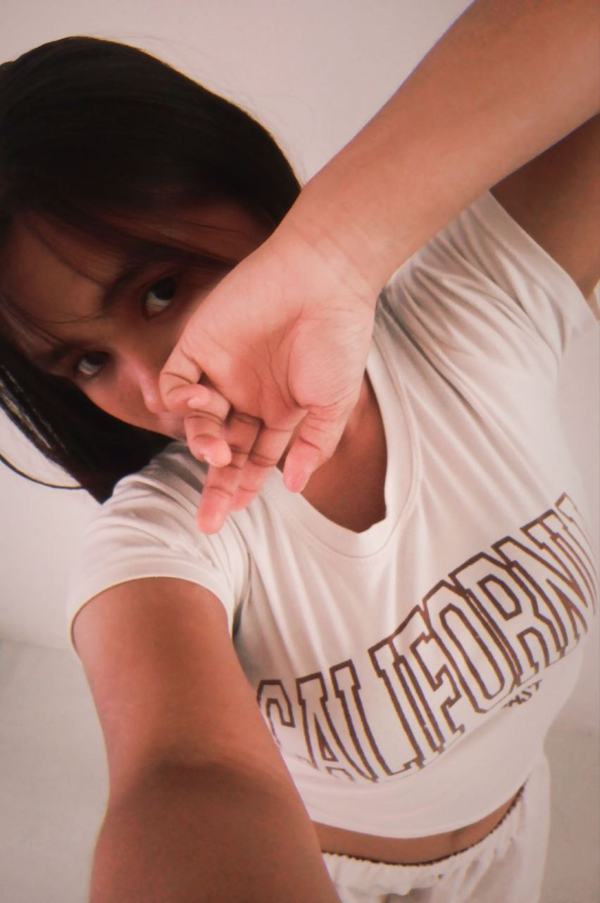
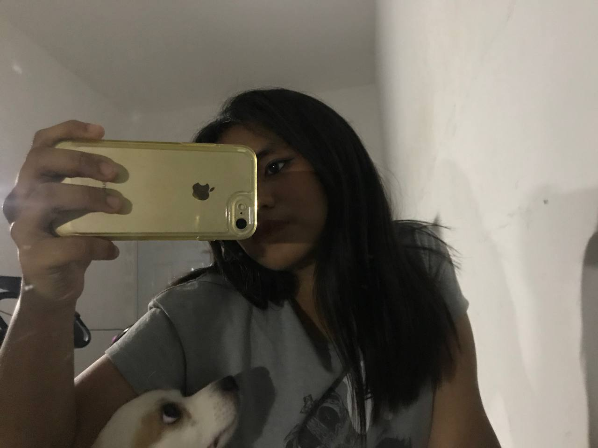
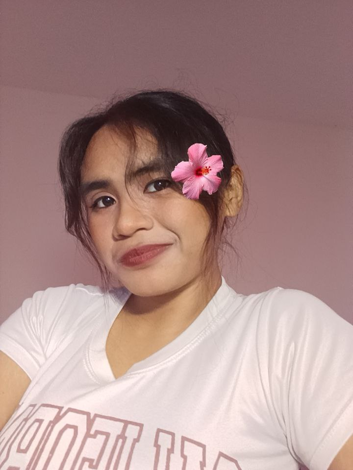
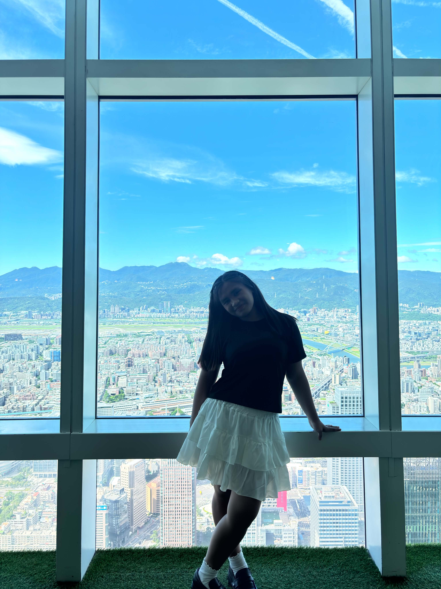
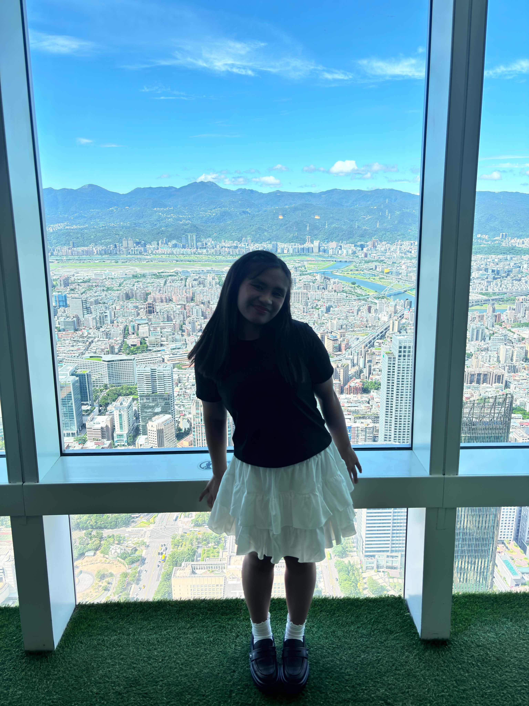
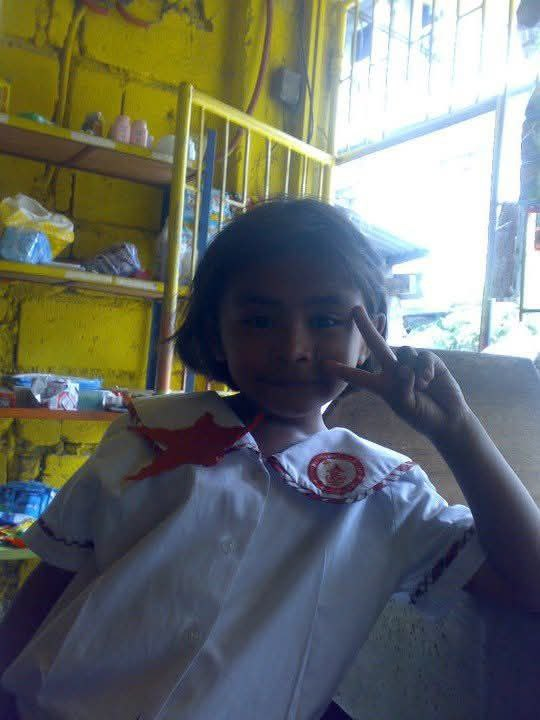
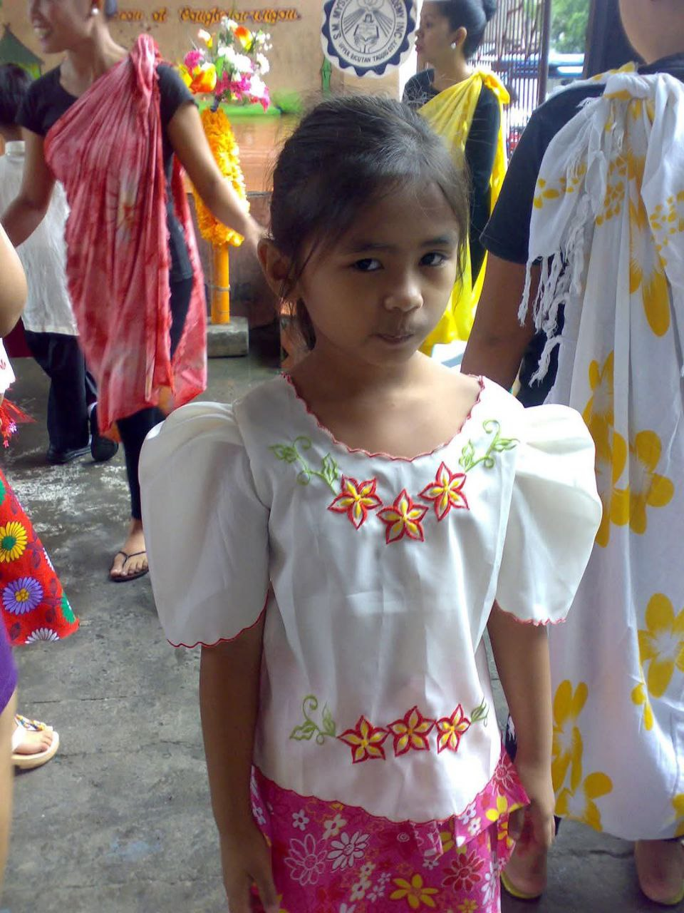
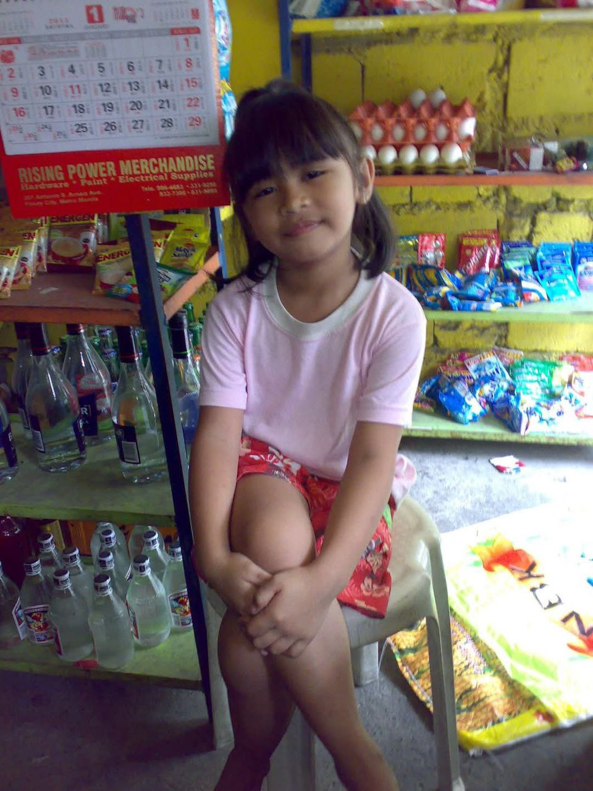
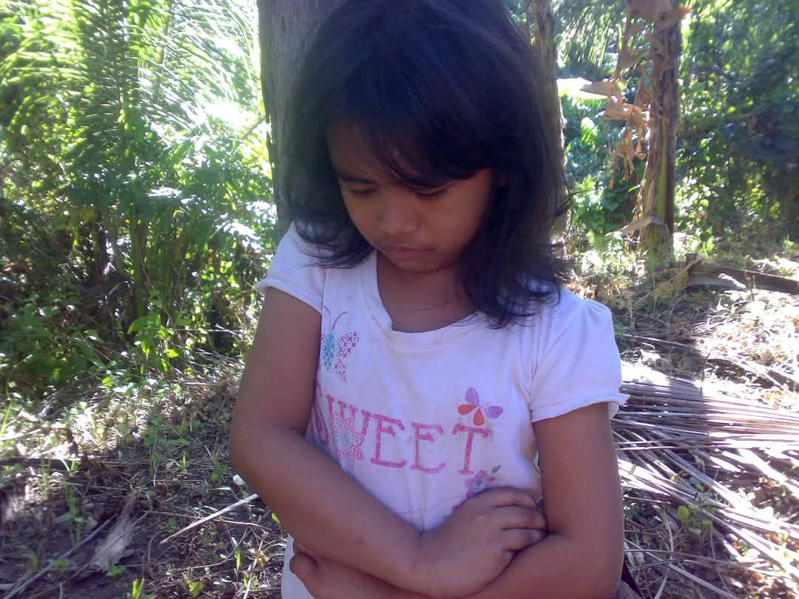
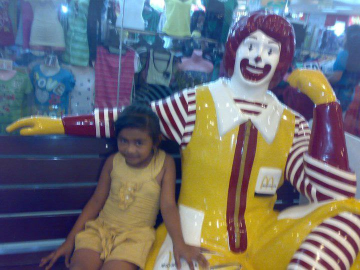
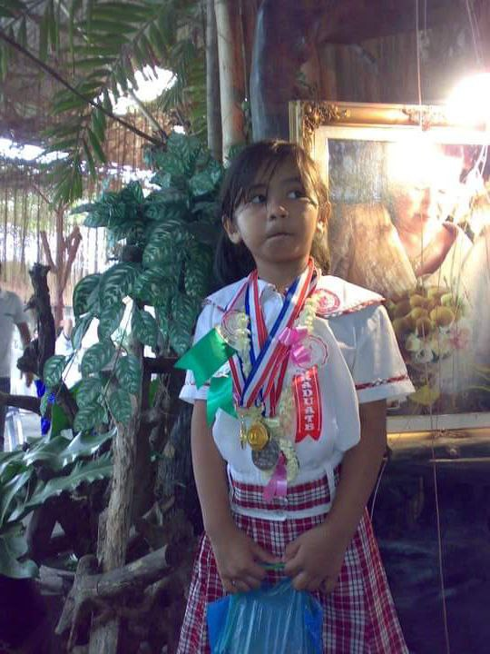
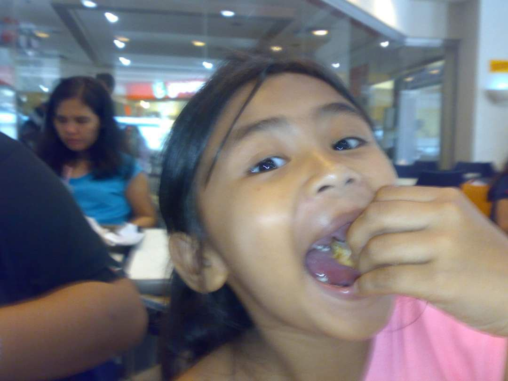
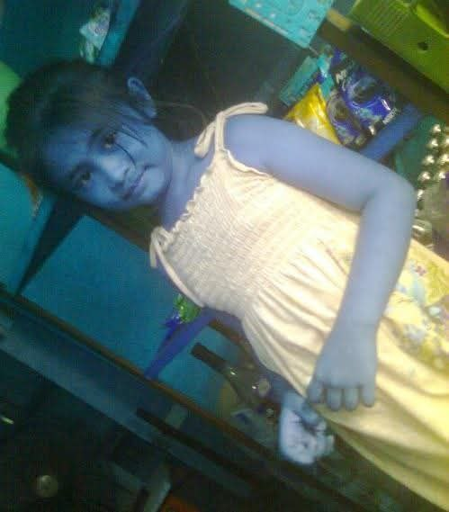













Hi, I'm Crisanelle Khryzia, but you can call me Khryzia.
I'm currently taking a Bachelor of Science in Computer Science.
I'm from Taguig City, but I currently live alone in Cavite.
This website is all about me and the little things that make me who I am.
If you're interested in getting to know me better, feel free to explore
and read through my information. And if not, you can leave. 🌸
little stories, favorite worlds, and books waiting to be discovered♡
✨ YOUR RANDOM PICK ✨
Maybe this is the one♡